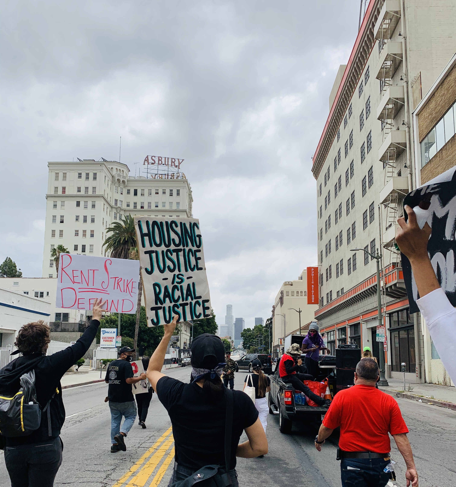
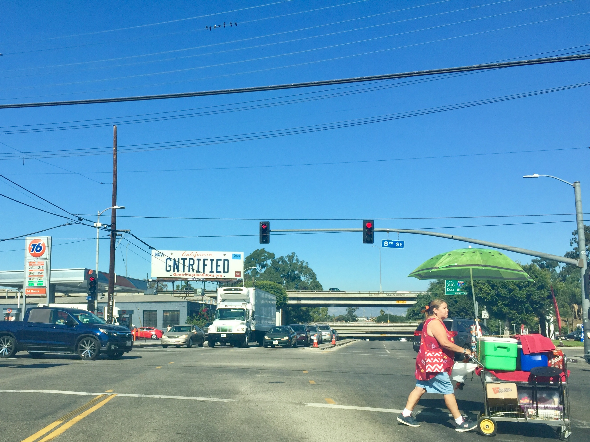
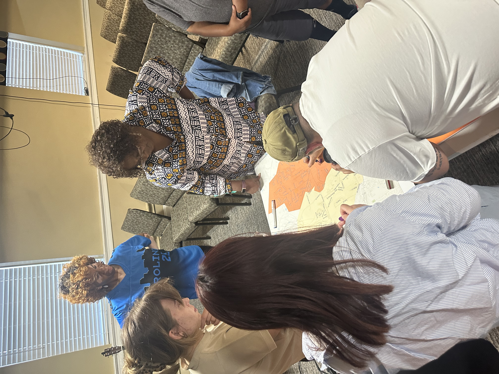

Based in the Department of City and Regional Planning at UNC Chapel Hill, the Unmapped Urban Futures Lab is an interdisciplinary research collective studying how marginalized communities reshape cities from the ground up. Our work spans housing, transportation, land use, and community development, with a shared commitment to equity-oriented research and practice.
We draw on community-rooted methods, including oral histories, archival research, and participant observation, as well as quantitative data analysis to understand urban change across both lived experience and structural conditions. By bringing together community knowledge and data-driven inquiry, we examine how neighborhoods navigating gentrification, displacement, and uneven development build alternative infrastructures of planning, governance, and care.
The lab brings together undergraduate and graduate researchers in a collaborative environment grounded in questions of power, representation, and data justice.